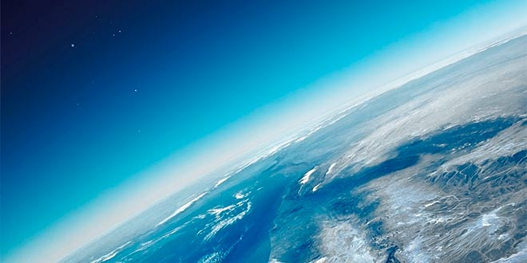
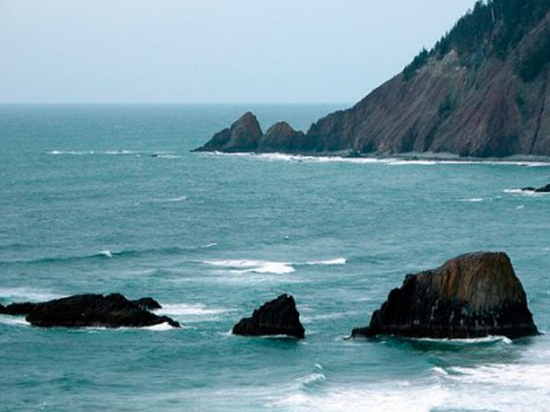
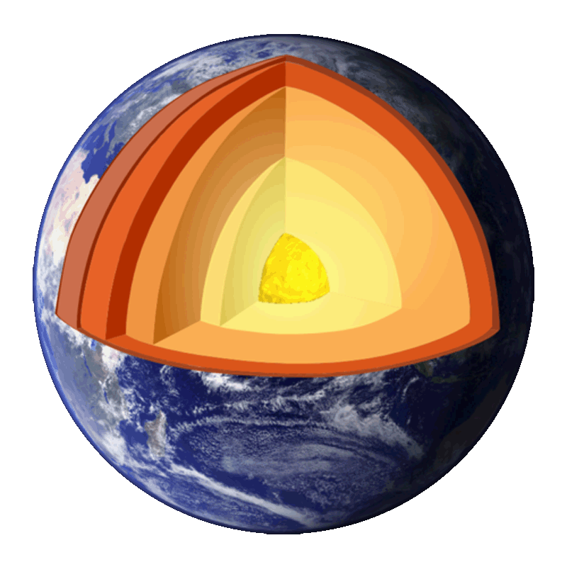
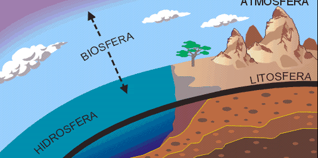
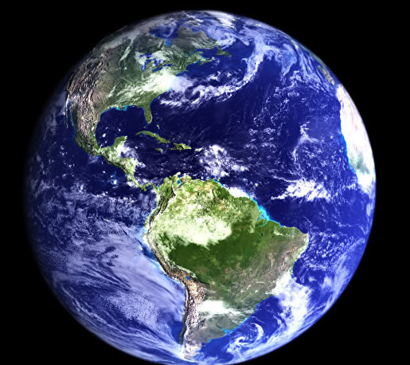

Ciclo del agua
El agua tiene un valor único para la vida: al fluir por el terreno cambia el relieve, transporta sedimentos y deposita nutrientes.
El movimiento del agua desde la atmósfera, litosfera e hidrosfera constituye el ciclo del agua. Las principales rutas del ciclo del agua son:
- Evaporación: principal depósito de agua son los océanos.La rediación solar determina la evaporación de los océanos y aguas continentales y esta se eleva a la atmósfera como vapor de agua.
- Transpiración: las plantas aportan vapor del agua a la atmósfera.
- Condensación: las corrientes de aire transportan al vapor a grandes distancias formando las nubes.
- Precipitación: cuando se enfría el aire que conduce el vapor, éste se condensa en agua líquida y se precipita de diversas maneras.
Los ciclos se clasifican por dos :
Ciclos de nutrientes gaseosos: la atmósfera constituye el principal depósito.
Ciclos sedimentarios: las rocas sedimentales son el depósito principal.
Ciclos del carbono y del oxígeno
- El ciclo del carbono tiene su curso en depósitos de la hidrosfera, litosfera y atmósfera, así como los seres vivos.
- El ciclo del carbono y del oxígeno estan íntimamante relacionados , ya que por el proceso de fontosíntesis y respiracón estos ciclos se reciclan.
- La vida del planeta depende del proceso de fontosíntesis realizado por los organismos autótrofos fotosintéticos.
Ciclo del nitrógeno
Es un ciclo biogeoquímicos gaseoso y su principal depósito es la atmósfera, que contiene 79% de nitrógeno.
Existen tres formas para fijar el nitrógeno:
- Fijación biológica: existen bacterias que se asocian con las raíces de palntas como las leguminosas y su acción es fija del nitrógeno.
- Fijación atmosférica: Se realiza mediante un proceso fisicoquímico que se da cuando los relampagos convierten el nitrógeno atmosférico.
- Fijación industrial: Es muy similar a la fijación atmosferica y se realiza por un proceso llamado Haber-Bosch
El ciclo del nitrógeno se presenta en 4 pasos:
- Fijación de nitrogeno: El nitrógeno se convierte en nitrato por cualquier forma de fijación y de esta manera las plantas lo obtienen a través de sus raíces.
- Aminificación tambien llamada amonificación: Los organismos muertos son degradados por los hongos y bacterias.
- Nitrificación: Otras bacterias transforman en amoniaco en nitratos y luego en nitritos.
- Desnitrificación: Otras bacterias convierten los nitratos en nitrógeno atmosférico.
Ciclo del Fósforo
Elemento indispensable para la vida, su principal depósito son las rocas sedimentarias y es un componente de los ácidos nucleicos.
Su ciclo:
- El viento y el agua intemperizan las rocas y los fosfatos son transportados hasta el suelo donde las plantas lo absorben.
- El intemperismo es el proceso por el cual las rocas se descomponen por la acción del viento, agua, calor, humedad, etc.
- Los animales se alimentan de las plantas.
- Los animales y las plantas mueren, son degradados por los hongos y bacterias.
- A través de la cadena alimentaria el fósforo retorna los seres vivos.
- El excremento de los animales que se alimentan de las costas tienen gran cantidad de fósforo.


La tierra como un todo, un planeta vivo y dinámico
Desde las entrañas de la Tierra se escucha un grito de ¡ya basta!, un grito que desgarra y aturde, algunos lo oyen, unos cuantos lo escuchan y algunos pocos preocupa.
Tenemos que parar, respirar, meditar, reflexionar y actuar. Solo así lograremos corregir el rumbo. No se trata de satisfacer ningun interes de cualquier indole, se trata de respirar aire puro y tomar agua limpia.
Hace aproximadamente 5,000 millones de años la estrella que es nuestro sol comenzó su existencia. Se estima que los planetas, incluida la Tierra , comenzarón su existencia hace aproximadamente 4,600 millones de años. La Tierra esta formada por:
Atmósfera |
Capa gaseosa que envuelve a la Tierra. |
 |
Hidrósfera |
La integra el agua líquida que cubre la Tierra. |
 |
Geosfera |
Formada por núcleo, manto y corteza. |
 |
Litosfera |
Es la porción sólida de la corteza terrestre. |
 |
Biosfera |
Es todo el dominio donde se encuentra la vida. |
 |
|
Educación Ambiental
(Aplicación del anteproyecto)
- Sientete parte de la naturaleza, todas las especies son importantes y nosotros formamos parte del planeta.
- Derroche de los recursos ponen en riesgo nuestro destino.
- Es importante saber acerca de los acontesimientos que son mas comunes en tu comunidad, ya que pueden ser motivo del desarrollo de enfermedades.

Informacion sacada de: Libro de Ecologia y medio ambiente , Maria Eugenia Mendez Rosales, 1° edicion, 2015 D.R Book Mart, S.A de C.V
Regresar al titulo
Regresar al índice